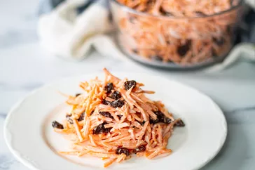

Carrot Salad

Description
Carrot salad is a salad made with carrots. Recipes for carrot salad vary widely by regional cuisine. Shredded carrot is often used.
Shredded carrot salads are often used as a topping for other dishes.
Ingredients
- 1 pound shredded carrots
- 1 ¼ cups raisins
- 2 to 3 tablespoons mayonnaise, or to taste
- 1 teaspoon lemon juice
- ¼ teaspoon salt
Steps
- Mix shredded carrots and raisins together in a large serving bowl.
- Whisk mayonnaise, lemon juice, and salt in a small bowl until smooth.
Pour over carrot mixture; stir until carrots and raisins are completely coated.
Refrigerate until chilled, at least 30 minutes.